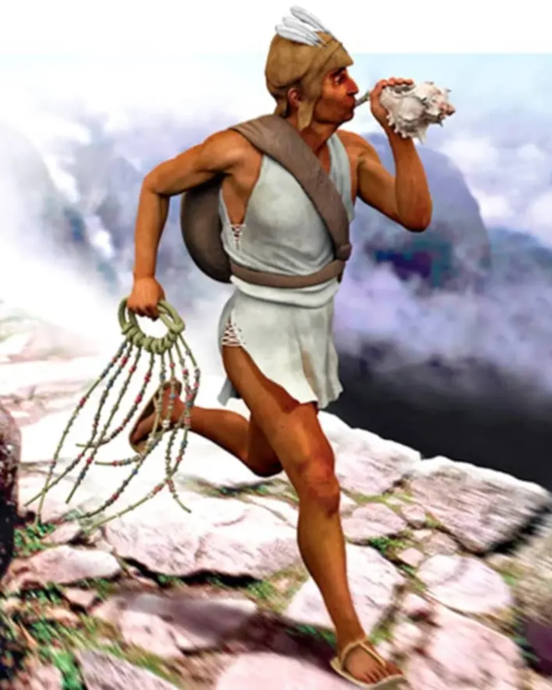

By walking or running! The roads are mainly used to merchants that have llamas carry goods along the 30,000 km that is carried. If you don't want to walk, you share messages with runners that will relay your message. These runner were Chasqui or Chaski and they were young men runinng 10 - 15km to send important messages (verbally or with quipus (learn more here)) back and forth every day. Some time during the day you may hear group leader use a conch (like the one in the header) to alert people of their arrival. On some days, the millary may get in your ways some day if they are looking into getting more land for the Empire.
